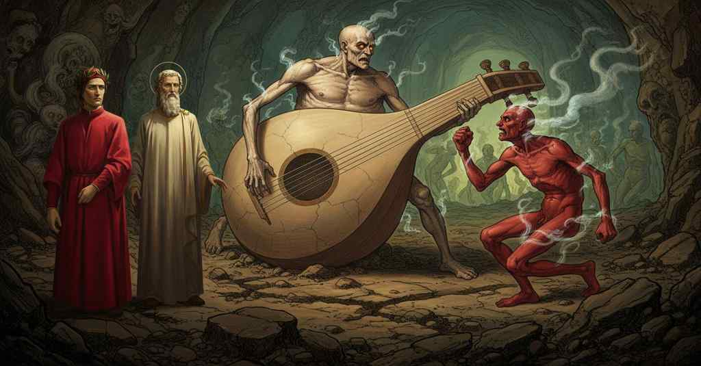

Inferno — Canto 30

Dante witnesses the punishments of various falsifiers, culminating in a vulgar quarrel between the counterfeiter Master Adam and the liar Sinon, for which Virgil rebukes him for his unseemly interest. 偽造者の濠で、語り手は親方アダーモとシノンの醜い口論に夢中になるが、ウェルギリウスにその卑しい好奇心を厳しく叱責される。
1
Nel tempo che Iunone era crucciata
In the time when Juno was enraged
かつてユノが怒りに駆られた時
2
per Semelè contra ’l sangue tebano,
for Semele against the Theban blood,
セメレのことでテーベの血族に対し、
3
come mostrò una e altra fïata,
as she showed more than once,
それを幾度となく示したように、
4
Atamante divenne tanto insano,
Athamas became so insane,
アタマスは狂気のあまり、
5
che veggendo la moglie con due figli
that seeing his wife with two sons
二人の子を連れた妻が
6
andar carcata da ciascuna mano,
coming burdened on either hand,
両手に一人ずつ抱えて行くのを見て、
7
gridò: «Tendiam le reti, sì ch’io pigli
he cried: “Let us spread the nets, so that I may catch
叫んだ、「網を張れ、俺が捕らえるのだ
8
la leonessa e ’ leoncini al varco»;
the lioness and the cubs at the pass”;
雌獅子と仔獅子を隘路で」。
9
e poi distese i dispietati artigli,
and then he stretched his pitiless claws,
そして無慈悲な爪を伸ばし、
10
prendendo l’un ch’avea nome Learco,
taking the one who was named Learchus,
レアルコという名の一人を捕らえ、
11
e rotollo e percosselo ad un sasso;
and whirled him and dashed him against a rock;
彼を振り回し、岩に打ちつけた。
12
e quella s’annegò con l’altro carco.
and she drowned herself with her other burden.
そして彼女はもう一方の荷と共に溺れた。
13
E quando la fortuna volse in basso
And when fortune turned low
そして運命が奈落に突き落とした時
14
l’altezza de’ Troian che tutto ardiva,
the height of the Trojans that dared all,
すべてを恃んだトロイア人の高慢を、
15
sì che ’nsieme col regno il re fu casso,
so that together with the kingdom the king was undone,
王国と共に王が滅び去った時、
16
Ecuba trista, misera e cattiva,
Hecuba, sad, miserable, and captive,
ヘカベーは悲しみ、惨めで、囚われの身となり、
17
poscia che vide Polissena morta,
after she saw Polyxena dead,
ポリュクセナが死んだのを見た後、
18
e del suo Polidoro in su la riva
and of her Polydorus on the shore
そして彼女のポリュドロスが岸辺で
19
del mar si fu la dolorosa accorta,
of the sea the grieving one became aware,
海にいるのを悲しみのうちに見出した時、
20
forsennata latrò sì come cane;
driven mad, she barked like a dog;
狂気のあまり犬のように吠えた。
21
tanto il dolor le fé la mente torta.
so much did grief twist her mind.
それほどまでに苦痛が彼女の心を歪めたのだ。
22
Ma né di Tebe furie né troiane
But neither Theban furies nor Trojan
しかしテーベの狂気もトロイアの狂気も
23
si vider mäi in alcun tanto crude,
were ever seen in anyone so cruel,
誰においても見られなかった、あれほど残酷なものは、
24
non punger bestie, nonché membra umane,
in stinging beasts, let alone human limbs,
人間の体どころか、獣を刺すのでさえも、
25
quant’ io vidi in due ombre smorte e nude,
as I saw in two pale and naked shades,
私が二つの青ざめた裸の魂に見たほどには。
26
che mordendo correvan di quel modo
who, biting, ran in that way
それらは噛みつきながら、さながら
27
che ’l porco quando del porcil si schiude.
that a pig does when let out of its sty.
豚が豚小屋から放たれた時のように走っていた。
28
L’una giunse a Capocchio, e in sul nodo
One reached Capocchio, and on the knot
一つはカポッキオに追いつき、首の
29
del collo l’assannò, sì che, tirando,
of his neck it sank its teeth, so that, dragging him,
付け根に牙を立て、引きずりながら、
30
grattar li fece il ventre al fondo sodo.
it made his belly scrape the solid ground.
その腹を硬い地面に擦りつけさせた。
31
E l’Aretin che rimase, tremando
And the Aretine who remained, trembling,
そして残されたアレッツォ出身の者は、震えながら
32
mi disse: «Quel folletto è Gianni Schicchi,
said to me: “That goblin is Gianni Schicchi,
私に言った、「あの小悪魔はジャンニ・スキッキです、
33
e va rabbioso altrui così conciando».
and he goes raging, mangling others thus.”
狂ったように他人をあのように痛めつけて回るのです」。
34
«Oh», diss’ io lui, «se l’altro non ti ficchi
“Oh,” I said to him, “so may the other not fix
「おお」と私は彼に言った、「もしもう一人がおまえに
35
li denti a dosso, non ti sia fatica
its teeth on your back, may it not be a chore for you
歯を突き立てないのであれば、労を厭わず
36
a dir chi è, pria che di qui si spicchi».
to say who it is, before it takes off from here.”
教えてくれ、あれが誰なのかを、ここから去る前に」。
37
Ed elli a me: «Quell’ è l’anima antica
And he to me: “That is the ancient soul
すると彼は私に、「あれは古の魂
38
di Mirra scellerata, che divenne
of wicked Myrrha, who became
邪悪なミュラーのものです。彼女は
39
al padre, fuor del dritto amore, amica.
her father's lover, outside of rightful love.
父に対して、正当な愛を外れて、情婦となったのです。
40
Questa a peccar con esso così venne,
She came to sin with him in this way,
彼女が父と罪を犯すに至ったのは、
41
falsificando sé in altrui forma,
falsifying herself in another's form,
他人の姿に自分を偽ったからで、
42
come l’altro che là sen va, sostenne,
just as the other one who goes off there, undertook,
あそこを行くもう一人が、そうしたように、
43
per guadagnar la donna de la torma,
to win the prize mare,
群れ一の雌馬を手に入れるため、
44
falsificare in sé Buoso Donati,
to falsify in himself Buoso Donati,
自らをブオーゾ・ドナーティだと偽り、
45
testando e dando al testamento norma».
making a will and giving the will legal form.”
遺言を作成し、その遺言に規範を与えたのです」。
46
E poi che i due rabbiosi fuor passati
And after the two raging ones had passed,
そして二人の狂人が通り過ぎた後、
47
sovra cu’ io avea l’occhio tenuto,
on whom I had kept my eye,
私は彼らに目を留めていたが、
48
rivolsilo a guardar li altri mal nati.
I turned it to look at the other ill-born.
他の不運な者たちを見るために目を転じた。
49
Io vidi un, fatto a guisa di lëuto,
I saw one, shaped like a lute,
私は一人を見た、リュートの形をした者を、
50
pur ch’elli avesse avuta l’anguinaia
if only he had had the groin
もし彼が股間部を、人が二股に分かれる部分で
51
tronca da l’altro che l’uomo ha forcuto.
cut off from that part which a man has forked.
断ち切られていたならばの話だが。
52
La grave idropesì, che sì dispaia
The heavy dropsy, which so unpairs
重い水腫病が、ひどく不釣合いにさせている
53
le membra con l’omor che mal converte,
the limbs with the humor it ill converts,
体液がうまく転換されぬため、その四肢を、
54
che ’l viso non risponde a la ventraia,
that the face does not match the paunch,
顔が腹部と釣り合わないほどに、
55
faceva lui tener le labbra aperte
made him hold his lips apart
そのせいで彼は唇を開けたままにしていた
56
come l’etico fa, che per la sete
like the hectic man who, from thirst,
消耗病患者がするように、渇きのあまり
57
l’un verso ’l mento e l’altro in sù rinverte.
curls one toward his chin and the other upward.
片方を顎へ、もう片方を上へと反り返らせて。
58
«O voi che sanz’ alcuna pena siete,
“O you who are without any punishment,
『おお、あなた方は何の罰もなくおられるが、
59
e non so io perché, nel mondo gramo»,
and I know not why, in this wretched world,”
理由は分からぬが、この惨めな世界で』
60
diss’ elli a noi, «guardate e attendete
he said to us, “look and attend
彼は我々に言った、『見よ、そして心に留めよ
61
a la miseria del maestro Adamo;
to the misery of Master Adam;
親方アダーモの悲惨さを。
62
io ebbi, vivo, assai di quel ch’i’ volli,
I had, when alive, enough of what I wanted,
私は生前、望むものを十分に持っていたが、
63
e ora, lasso!, un gocciol d’acqua bramo.
and now, alas!, I crave a drop of water.
今や、ああ！、一滴の水を渇望している。
64
Li ruscelletti che d’i verdi colli
The little streams that from the green hills
緑の丘々から流れ出る小川は
65
del Casentin discendon giuso in Arno,
of Casentino run down into the Arno,
カゼンティーノの、下ってアルノ川へと注ぎ、
66
faccendo i lor canali freddi e molli,
making their channels cool and moist,
その水路を冷たく湿らせているが、
67
sempre mi stanno innanzi, e non indarno,
are always before me, and not in vain,
常に私の目の前にあり、それも無駄ではない、
68
ché l’imagine lor vie più m’asciuga
for their image parches me far more
なぜならその面影が、病よりもはるかに私を干上がらせるからだ
69
che ’l male ond’ io nel volto mi discarno.
than the sickness by which my face is made gaunt.
私の顔を痩せこけさせるこの病よりも。
70
La rigida giustizia che mi fruga
The rigid justice that ransacks me
私を苛む厳格な正義は
71
tragge cagion del loco ov’ io peccai
draws occasion from the place where I sinned
私が罪を犯した場所を理由として引き出し
72
a metter più li miei sospiri in fuga.
to make my sighs fly forth the more.
私の溜息をますます迸らせるのだ。
73
Ivi è Romena, là dov’ io falsai
There is Romena, where I falsified
そこにロメーナがある、そこで私は偽造した
74
la lega suggellata del Batista;
the alloy sealed with the Baptist;
バティスタの印が押された合金を。
75
per ch’io il corpo sù arso lasciai.
for which I left my body burned up there.
そのために私は、上で体を焼かれて残してきた。
76
Ma s’io vedessi qui l’anima trista
But if I could see here the sad soul
だが、もし私がここで悲しき魂を
77
di Guido o d’Alessandro o di lor frate,
of Guido or of Alessandro or of their brother,
グイドか、アレッサンドロか、彼らの兄弟の魂を見られるなら、
78
per Fonte Branda non darei la vista.
I would not give the sight for Fonte Branda.
フォンテ・ブレンダと引き換えにしてもその光景を惜しまないだろう。
79
Dentro c’è l’una già, se l’arrabbiate
One is here within already, if the rabid
中には既に一人がいる、もし怒り狂う
80
ombre che vanno intorno dicon vero;
shades that go about speak true;
亡者たちが周りで言うことが真実なら。
81
ma che mi val, c’ho le membra legate?
but what good is it to me, who have my limbs bound?
だが何になろう、私の四肢は縛られているのに？
82
S’io fossi pur di tanto ancor leggero
If I were only still so light
もし私がまだそれほどに軽かったなら
83
ch’i’ potessi in cent’ anni andare un’oncia,
that in a hundred years I could move one inch,
百年に一オンチャでも進めるほどに、
84
io sarei messo già per lo sentiero,
I would have already set myself upon the path,
私はとうに道を進み始めていただろう、
85
cercando lui tra questa gente sconcia,
searching for him among this foul folk,
この汚らわしい人々の中から彼を探して、
86
con tutto ch’ella volge undici miglia,
though it circles eleven miles,
この濠が十一マイルの周りを持ち、
87
e men d’un mezzo di traverso non ci ha.
and is no less than half a mile across.
横幅が半マイルを下らないにもかかわらず。
88
Io son per lor tra sì fatta famiglia;
Because of them I am in such a family;
私は彼らのせいで、このような仲間の中にいる。
89
e’ m’indussero a batter li fiorini
they induced me to strike the florins
彼らは私を唆してフィオリーノ金貨を鋳造させた
90
ch’avevan tre carati di mondiglia».
that had three carats of dross.”
三カラットの混ぜ物が入ったものを』。
91
E io a lui: «Chi son li due tapini
And I to him: “Who are the two wretches
そこで私は彼に言った、『あの二人の哀れな者は誰か
92
che fumman come man bagnate ’l verno,
that steam like wet hands in winter,
冬に濡れた手のように湯気を立て、
93
giacendo stretti a’ tuoi destri confini?».
lying close to your right-hand confines?”
あなたの右の境にぴったりと横たわっているが？』。
94
«Qui li trovai—e poi volta non dierno—»,
“Here I found them—and since they have not turned—”
『ここで彼らを見つけた――そしてそれから向きも変えなかった――』
95
rispuose, «quando piovvi in questo greppo,
he answered, “when I rained into this ditch,
彼は答えた、『私がこの崖に降って来た時に、
96
e non credo che dieno in sempiterno.
and I do not think they will move for all eternity.
そして永遠に動くことはないと思う。
97
L’una è la falsa ch’accusò Gioseppo;
One is the false woman who accused Joseph;
一人はヨセフを告発した偽りの女。
98
l’altr’ è ’l falso Sinon greco di Troia:
the other is the false Sinon, the Greek from Troy:
もう一人はトロイアの偽りのギリシャ人シノン。
99
per febbre aguta gittan tanto leppo».
because of their high fever they give off such a stench.”
激しい熱病のせいで、ひどい悪臭を放っているのだ』。
100
E l’un di lor, che si recò a noia
And one of them, who took it as an annoyance
そして彼らのうちの一人は、苛立ち
101
forse d’esser nomato sì oscuro,
perhaps at being named so obscurely,
おそらくは、そのようにみすぼらしく呼ばれたことに、
102
col pugno li percosse l’epa croia.
struck him with his fist on the hard paunch.
拳でその硬い腹を打ち据えた。
103
Quella sonò come fosse un tamburo;
It resounded as if it were a drum;
それは太鼓であるかのように鳴り響き、
104
e mastro Adamo li percosse il volto
and Master Adam struck him on the face
そして親方アダーモは彼の顔を打ち据えた
105
col braccio suo, che non parve men duro,
with his arm, which seemed no less hard,
劣らず硬そうに見える、その腕で。
106
dicendo a lui: «Ancor che mi sia tolto
saying to him: “Although I am deprived
彼に言った、「たとえ奪われていようとも
107
lo muover per le membra che son gravi,
of movement by my heavy limbs,
重い手足ゆえに動くことは、
108
ho io il braccio a tal mestiere sciolto».
I have my arm free for such a task.”
このような仕事には私の腕は自由だ」。
109
Ond’ ei rispuose: «Quando tu andavi
Whereupon he replied: “When you were going
すると彼は答えた、「お前が行くときには
110
al fuoco, non l’avei tu così presto;
to the fire, you did not have it so quick;
火刑台へ、お前の腕はそれほど素早くはなかった。
111
ma sì e più l’avei quando coniavi».
but had it so and more when you were minting.”
だが、鋳造していた時には、そうであり、それ以上だった」。
112
E l’idropico: «Tu di’ ver di questo:
And the one with dropsy: “You speak truth in this:
そして水腫の男は、「この点ではお前は真実を言う。
113
ma tu non fosti sì ver testimonio
but you were not so true a witness
だかお前は、それほど真実の証人ではなかった
114
là ’ve del ver fosti a Troia richesto».
there, when you were asked for the truth at Troy.”
トロイアで真実を問われた、その場所では」。
115
«S’io dissi falso, e tu falsasti il conio»,
“If I spoke false, and you falsified the coin,”
「もし俺が嘘を言ったとて、お前は貨幣を偽造した」
116
disse Sinon; «e son qui per un fallo,
said Sinon; “and I am here for one fault,
とシノンは言った。「そして俺は一つの過ちでここにいるが、
117
e tu per più ch’alcun altro demonio!».
and you for more than any other demon!”
お前は他のどんな悪魔よりも多くの罪でいるのだ！」。
118
«Ricorditi, spergiuro, del cavallo»,
“Remember the horse, you perjurer,”
「思い出せ、偽誓者よ、あの木馬を」
119
rispuose quel ch’avëa infiata l’epa;
replied the one who had the swollen paunch;
と腹を膨らませた者が答えた。
120
«e sieti reo che tutto il mondo sallo!».
“and may it pain you that the whole world knows it!”
「そして全世界が知っていることでお前は苦しめ！」。
121
«E te sia rea la sete onde ti crepa»,
“And may the thirst that cracks your tongue be your pain,”
「そしてお前を苦しめよ、お前の舌を裂くその渇きが」
122
disse ’l Greco, «la lingua, e l’acqua marcia
said the Greek, “and the rotten water
とギリシャ人は言った。「舌を、そして腐った水が
123
che ’l ventre innanzi a li occhi sì t’assiepa!».
that heaps your belly like a hedge before your eyes!”
目の前でその腹を壁のようにしていることが！」。
124
Allora il monetier: «Così si squarcia
Then the coiner: “So does your mouth
すると貨幣偽造者は、「そのように裂けるのだ
125
la bocca tua per tuo mal come suole;
gape to your own harm, as is its wont;
お前の口は、いつものように自らの悪のために。
126
ché, s’i’ ho sete e omor mi rinfarcia,
for if I have thirst, and humor stuffs me,
なぜなら、もし俺に渇きがあり、体液が俺を満たしていても、
127
tu hai l’arsura e ’l capo che ti duole,
you have the burning fever and the aching head,
お前には熱病と頭痛があり、
128
e per leccar lo specchio di Narcisso,
and to lick the mirror of Narcissus,
そしてナルキッソスの鏡を舐めるためには、
129
non vorresti a ’nvitar molte parole».
you would not need many words of invitation.”
多くの言葉で誘われる必要はないだろう」。
130
Ad ascoltarli er’ io del tutto fisso,
I was completely fixed on listening to them,
彼らの言葉を聞くのに私はすっかり夢中になっていた、
131
quando ’l maestro mi disse: «Or pur mira,
when the master said to me: “Now just you look,
そのとき師が私に言った、「さあ、見続けるがよい、
132
che per poco che teco non mi risso!».
for it's by a little that I don't quarrel with you!”.
もう少しでお前と私が喧嘩になるところだったぞ！」。
133
Quand’ io ’l senti’ a me parlar con ira,
When I heard him speak to me with anger,
私が、彼が怒りを込めて私に話すのを聞いたとき、
134
volsimi verso lui con tal vergogna,
I turned toward him with such shame,
私は彼の方を向いた、これほどの羞恥心をもって、
135
ch’ancor per la memoria mi si gira.
that it still revolves in my memory.
それは今も記憶の中で私を混乱させるほどだ。
136
Qual è colui che suo dannaggio sogna,
As is he who dreams of his own harm,
自らの災難を夢に見る者のように、
137
che sognando desidera sognare,
who while dreaming desires to be dreaming,
夢を見ながら、夢であることを望み、
138
sì che quel ch’è, come non fosse, agogna,
so that he yearns for what is, as if it were not,
それで、あるものを、ないかのように、渇望する、
139
tal mi fec’ io, non possendo parlare,
such I became, unable to speak,
そのようになった私は、話すこともできず、
140
che disïava scusarmi, e scusava
who wished to excuse myself, and was excusing
弁解したいと願い、そして弁解していた
141
me tuttavia, e nol mi credea fare.
myself all the while, and did not think I was doing it.
やはり自分を、そうしているとは自分でも思わずに。
142
«Maggior difetto men vergogna lava»,
“A greater fault is washed by lesser shame,”
「もっと少ない羞恥でも、より大きな過ちは洗い流せる」
143
disse ’l maestro, «che ’l tuo non è stato;
said the master, “than yours has been;
と師は言った、「お前の過ちほどではないものを。
144
però d’ogne trestizia ti disgrava.
therefore of all sadness unburden yourself.
それゆえ、あらゆる悲しみから自らを解き放て。
145
E fa ragion ch’io ti sia sempre allato,
And reckon that I am always at your side,
そして私が常にお前の傍らにいると心に留めよ、
146
se più avvien che fortuna t’accoglia
if it happens again that fortune receives you
もし再び、運命がお前を導くことがあれば
147
dove sien genti in simigliante piato:
where people are in a similar dispute:
同じような口論をする者たちのいる場所へ。
148
ché voler ciò udire è bassa voglia».
for the wish to hear it is a base desire.”
なぜなら、それを聞きたがるのは卑しい心だからだ」。